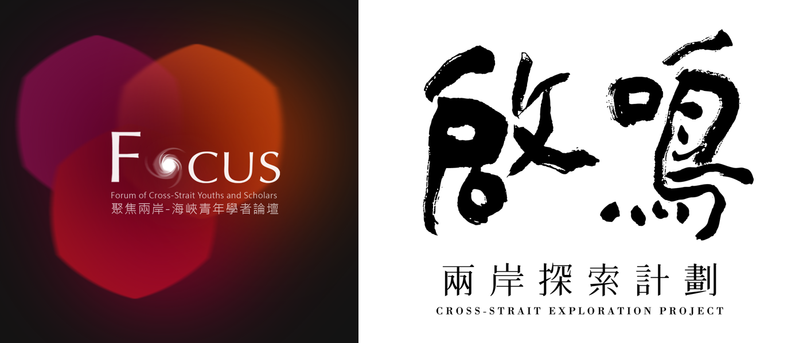
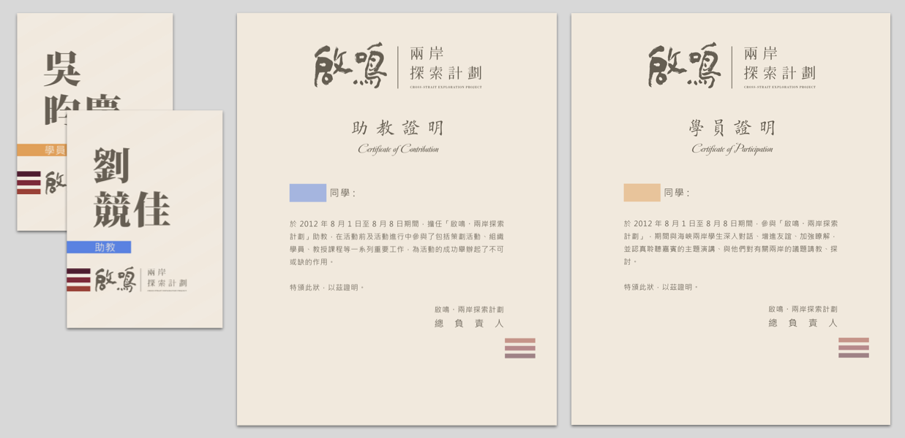

Cross-Strait Exploration Project (CEP) is an annual forum that brings together students from Mainland China, Hong Kong, and Taiwan for cultural and civil dialogue. In 2012, with the introduction of a new field research program, I designed the new brand for CEP, and showcased our focus on cultural understanding by using bold calligraphy.
 Left: Logo of FOCUS in 2011, predecessor of CEPWorking with another designer, I also created badges and certificates for participants. The large text on the badges brought out the beauty of Chinese characters, as well as encouraged conversations—it’s hard to forget names this way!
 Badges and certificates